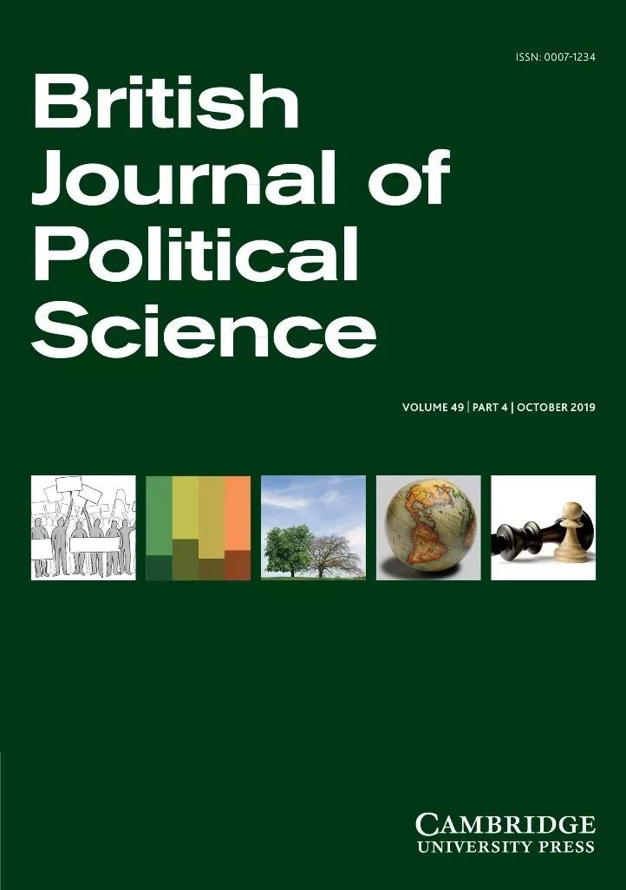

收录于合集
期刊简介 : 《英国政治学杂志》（British Journal of Political Science，BJPS）是一本基础广泛的杂志，涵盖了政治科学的所有领域（包括政治理论、政治行为、公共政策和国际关系），并且相关学科（社会学、社会理学、经济学和哲学）学者的文章也经常出现。根据2018年Journal Citation Report显示，其2018年的影响因子为4.292， 在176种政治科学类期刊中排名第4（4/176）。
期刊目录
1.全球移民支持的经济与文化驱动因素
Economic and Cultural Drivers of Immigrant Support Worldwide
2.连通性，庇护主义和公共物品提供
Connectivity, Clientelism and Public Provision
3.透明度、抗议与民主稳定
Transparency, Protest and Democratic Stability
4.关于气候信念的信念：二阶意见对气候政治的重要性
Beliefs about Climate Beliefs: The Importance of Second-Order Opinions for Climate Politics
5.政治上的身经百战是否能减少价值冲突？来自基于异方差分级IRT模型的气候变化观点证据
Does Political Sophistication Minimize Value Conflict? Evidence from a Heteroskedastic Graded IRT Model of Opinions toward Climate Change
6.利益、规范和对提供全球公共产品的支持：以气候合作为例
Interests, Norms and Support for the Provision of Global Public Goods: The Case of Climate Co-operation
7.国际制度和政治自由化：来自世界银行贷款项目的证据
International Institutions and Political Liberalization: Evidence from the World Bank Loans Program
8.经济环境如何决定偏好？来自长面板数据的证据
How do Economic Circumstances Determine Preferences? Evidence from Long-run Panel Data
9.政府支持是对其在社会福利上的表达的回应还是对其社会福利支出的回应
——基于英国、西班牙和美国政府支持的分析
Does Government Support Respond to Governments’ Social Welfare Rhetoric or their Spending? An Analysis of Government Support in Britain, Spain and the United States
10.捐助者困境：国际援助与人权侵犯
The Donor’s Dilemma: International Aid and Human Rights Violations
11.战争中的第三方行动者与蓄意针对平民的行为
Third-Party Actors and the Intentional Targeting of Civilians in War
12.欧洲立法政治中的网络与社会影响
Networks and Social Influence in European Legislative Politics
13.政党全国化的组织与意识形态策略：来自欧洲政党的证据
Organizational and Ideological Strategies for Nationalization: Evidence from European Parties
14.大规模枪击事件和公众对枪支管制的支持
Mass Shootings and Public Support for Gun Control

一、全球移民支持的经济与文化驱动因素 ****
题目： Economic and Cultural Drivers of Immigrant Support Worldwide
作者： Nicholas A. Valentino, 密歇根大学政治学系教授；Stuart N. Soroka, 密歇根大学媒体、传播与政治学系教授；Shanto Iyengar, 斯坦福大学政治学系教授；Toril Aalberg, 挪威科技大学政治学系教授；Raymond Duch, 牛津大学纳菲尔德学院教授；Marta Fraile, 中欧大学政治学研究员；Kyu S. Hahn, 首尔大学传播学系教授；Kasper M. Hansen, 哥本哈根大学政治学系教授；Allison Harell, 魁北克大学蒙特利尔分校政治学系教授；Marc Helbling, 班贝克大学政治学系教授；Simon D. Jackman, 美国研究中心CEO、教授；Tetsuro Kobayashi，香港城市大学传媒系副教授
摘要： 以在四大洲十一个国家开展的超过18000人的访谈为基础，采用比较实验设计，本文回顾并讨论了发达民主国家中影响移民态度的经济和文化驱动因素。我们在实验中不断调整移民的职业、肤色和来源国。研究结果与社会经济威胁理论最为一直：在所有国家中，对于处在所有社会经济地位的本地人而言，他们都更喜欢高技能移民而不是低技能移民。这与市场竞争假说不符，因为受访者并不反对和他们社会经济地位相同的移民。虽然在任何国家中，肤色本身对移民态度的影响很少，但是来自穆斯林占多数国家的移民往往确实会有明显较低水平的支持，种族仇恨仍然是一股强大的力量。
Employing a comparative experimental design drawing on over 18,000 interviews across eleven countries on four continents, this article revisits the discussion about the economic and cultural drivers of attitudes towards immigrants in advanced democracies. Experiments manipulate the occupational status, skin tone and national origin of immigrants in short vignettes. The results are most consistent with a Sociotropic Economic Threat thesis: In all countries, higher-skilled immigrants are preferred to their lower-skilled counterparts at all levels of native socio-economic status (SES). There is little support for the Labor Market Competition hypothesis, since respondents are not more opposed to immigrants in their own SES stratum. While skin tone itself has little effect in any country, immigrants from Muslim-majority countries do elicit significantly lower levels of support, and racial animus remains a powerful force.
二、连通性，庇护主义和公共物品提供
题目： Connectivity, Clientelism and Public Provision
作者： Mahvish Shami，伦敦政治经济学院国际发展系副教授
摘要： 在许多发展中国家，农村穷人常常为了从政府中获得公共产品而使用一些恩惠手段成为地方上的掮客。掮客负责用提供好处的方式换取农民对政客的投票。然而，农民的低议价能力使得庇护人能够为自己分配公共资源。本文建议通过把农民和村外市场联系起来，提高农民的议价能力。利用巴基斯坦高速公路建设中的一项自然实验，本文发现，与那些孤立的村庄相比，被道路连接的村庄的公共供产品给要高得多。此外，我发现连通性对下层阶级的益处最大，因为他们在孤立时最容易受到剥削。
In many developing countries the rural poor often depend on patrons to act as brokers in order to get public provision from the government. The broker facilitates provision in return for securing peasants’ votes for politicians. Yet, low bargaining power of peasants allows patrons to appropriate public resources for themselves. I propose increasing peasants’ bargaining power by connecting them to markets outside their village. Making use of a natural experiment found in the construction of a motorway in Pakistan, I find public provision to be significantly higher in connected villages when compared to those which are isolated. Moreover, I find that the beneficial impact of connectivity is felt most strongly by the lower classes, who are most vulnerable to exploitation when isolated.
三、 透明度、抗议与民主稳定
题目： Transparency, Protest and Democratic Stability
作者： James R. Hollyer, 明尼苏达大学政治学系副教授；B. Peter Rosendorff, 纽约大学政治学系教授；James Raymond Vreeland, 乔治城大学莫尔塔拉国际研究中心
摘要： 只要政治体系中所有相关行动者都遵守制度化的游戏规则，民主统治就能够得以维持——民主制度必须是自我强化的。本文调查了透明度在维系民主平衡中的作用。透明度改善了选举的运作：在透明的政体中，选举能更加有效地解决统治与被统治者的选择相互冲突的问题。透明度也增加了大众对民主的满意度，并抑制针对民主秩序的挑战。本文提供了一个博弈论模型来检验这些观点，并发现模型得到了经验证据的支持。透明度降低了民主崩溃以及民主领导人不正常更替的可能性。透明度稳定了民主政治。
Democratic rule is maintained so long as all relevant actors in the political system comply with the institutional rules of the game – democratic institutions must be self-enforcing. We examine the role of transparency in supporting a democratic equilibrium. Transparency improves the functioning of elections: in transparent polities, elections more effectively resolve adverse selection problems between the public and their rulers. Transparency increases popular satisfaction with democracy and inhibits challenges to the democratic order. We provide a game-theoretic model, test these claims, and find they enjoy empirical support. Transparency is associated with a reduction in both the probability of democratic collapse and of the irregular removal of democratic leaders. Transparency stabilizes democratic rule.
四、关于气候信念的信念：
二阶意见对气候政治的重要性 ****
题目： Beliefs about Climate Beliefs: The Importance of Second-Order Opinions for Climate Politics
作者： Matto Mildenberger，加州大学圣巴巴拉分校政治学系助理教授；Dustin Tingley, 哈佛大学政府系教授。
摘要： 当政治行动需要个人承担成本但可能带来集体收益时，政治参与就可能取决于个人对他人信念的认知；但是对这些二阶信念——关于他人信念的信念——的详细实证研究还很少。在这篇文章中，基于对大众、政治精英和知识精英的六项民意调查，作者首次对美国和中国的二阶气候信仰的分布和内容进行了全面考察。作者证实了所有阶层的政治行动者都有二阶信念，其特征是自我中心偏见和对支持气候变化立场的全面低估。随后，作者通过实验展示了在受访者更新了他们的二阶信念后，他们会增加对应对气候变化的政策的支持。本文的结论是，学者们应该更密切地关注二阶信念，因为它是形塑不作为的气候政策的关键因素以及学者们可以利用气候案例来拓展他们对二阶信念的理解。
When political action entails individual costs but group-contingent benefits, political participation may depend on an individual’s perceptions of others’ beliefs; yet detailed empirical attention to these second-order beliefs – beliefs about the beliefs of others – remains rare. We offer the first comprehensive examination of the distribution and content of second-order climate beliefs in the United States and China, drawing from six new opinion surveys of mass publics, political elites and intellectual elites. We demonstrate that all classes of political actors have second-order beliefs characterized by egocentric bias and global underestimation of pro-climate positions. We then demonstrate experimentally that individual support for pro- climate policies increases after respondents update their second-order beliefs. We conclude that scholars should focus more closely on second-order beliefs as a key factor shaping climate policy inaction and that scholars can use the climate case to extend their understanding of second-order beliefs more broadly.
五、政治上的老练是否能减少价值冲突？
来自基于异方差分级IRT模型 的气候变化观点证据
题目： Does Political Sophistication Minimize Value Conflict? Evidence from a Heteroskedastic Graded IRT Model of Opinions toward Climate Change
作者： Paul M. Kellstedt，德州农工大学政治科学系教授；Mark D. Ramirez，亚利桑那州立大学政治科学与国际政治系助理教授；Arnold Vedlitz，德州农工大政府与公共政策系Bob Bullock讲席教授；Sammy Zahran，科罗拉多大学经济学系教授。
摘要： 当公民对政策主张持有多重价值观时，他们可能会经历价值冲突、价值和解或价值权衡。但是，尚不清楚哪些人能以这些方式管理多重价值观。作者假设了一种价值多元化的政治成熟互动理论，在这个理论中，在政治上最为老练的个体能够调和多重价值的共存，从而增强政策主张的稳定性。作者使用了一系列针对气候变化相关政策舆论的异方差分级项目反应理论模型来检验此种假设。作者发现，人民通过其对于经济和环境的价值观建构他们对于气候变化的政策偏好，但只有最为老练的公民能够调和这些价值观之间的冲突。
When citizens hold multiple values relevant to their policy opinions, they might experience value conflict, value reconciliation or make a value trade- off. Yet, it is unclear which individuals are able to manage their multiple values in these ways. We posit a sophistication-interaction theory of value pluralism where the most politically sophisticated individuals are able to reconcile the existence of multiple values, thus increasing the stability of their policy opinions. We test this hypothesis using a series of heteroskedastic graded item response theory models of public opinion toward policies related to climate change. We find that people structure their policy preferences toward climate change policies in values toward the environment and the economy, but only the most sophisticated citizens are able to reconcile the potential conflict between these values.
六、利益、规范和对提供全球公共产品的支持：以气候合作为例
题目： Interests, Norms and Support for the Provision of Global Public Goods: The Case of Climate Co-operation
作者： Michael M. Bechtel, 美国圣路易斯华盛顿大学政治学系副教授、瑞士国际经济与应用经济研究院研究员；Federica Genovese，英国埃克塞斯大学政府系高级讲师；Kenneth F. Scheve，斯坦斯大学政治学系教授。
摘要： 减缓气候变化要求国家提供一项全球公共产品。这意味着国内大众对国际气候政策的态度分歧是决定该公共产品供应的核心因素。作者认为特定行业的减排成本和内化的社会规范有助于解释大众对气候政策的支持。为了验证这一猜想，作者设计了一个新的方法来测量特定行业的利益，即通过交叉引用个人就业和客观的行业污染数据，同时结合相关性数据及联合- 实验数据对社会规范进行准行为测量。作者发现，在污染行业工作的个人支持气候合作的可能性比在更清洁行业工作的个人低7%。本文的研究结果还表明，秉持互惠态度和利他主义的个人对全球气候政策的支持度比一般人多10%。这些研究发现表明，利益和规范可以作为相互补充的解释来提高人们对个人政策偏好的理解。
Mitigating climate change requires countries to provide a global public good. This means that the domestic cleavages underlying mass attitudes toward international climate policy are a central determinant of its provision. We argue that the industry-specific costs of emission abatement and internalized social norms help explain support for climate policy. To evaluate our predictions we develop novel measures of industry-specific interests by cross- referencing individuals’ sectors of employment and objective industry-level pollution data and employing quasi-behavioral measures of social norms in combination with both correlational and conjoint-experimental data. We find that individuals working in pollutive industries are 7 percentage points less likely to support climate co-operation than individuals employed in cleaner sectors. Our results also suggest that reciprocal and altruistic individuals are about 10 percentage points more supportive of global climate policy. These findings indicate that both interests and norms function as complementary explanations that improve our understanding of individual policy preferences.
七、国际制度和政治自由化：
来自世界银行贷款项目的证据
题目： International Institutions and Political Liberalization: Evidence from the World Bank Loans Program
作者： Allison Carnegie, 哥伦比亚大学政治学系副教授；Cyrus Samii，纽约大学政治系副教授。
摘要： 国际制度如何影响成员国的政治自由化？本文通过考察世界银行贷款项目说明制度可以提供机会让国家与先进富裕的成员国联系起来进而刺激自由化。在世界银行，当贷款接收方达到一定的经济发展水平时，它就有资格从借款方升级为贷款方。通过使用断点回归设计，本研究证明这种激励促使国家改善了它们有关人权和民主的国内行为。结合定量和定性的证据，研究结果表明渴望成为精英集团的一员是推动成员国进行改革的原因，因为它们相信这一成员资格会带来广泛的国际和国内收益。
How do international institutions affect political liberalization in member states? Motivated by an examnation of the World Bank loans program, this article shows that institutions can incentivize liberalization by offering opportunities for countries to become associated with advanced, wealthy members. In the World Bank, when a loan recipient reaches a specified level of economic development, it becomes eligible to graduate from borrower status to lender status. Using a regression discontinuity design, the study demonstrates that this incentive motivates states to improve their domestic behavior with respect to human rights and democracy. Combining qualitative and quantitative evidence, the results suggest that the desire to become a member of this elite group is responsible for motivating member states to reform due to the belief that such membership brings diffuse international and domestic benefits.
八、 **** 经济环境如何决定偏好？
来自长面板数据的证据 ****
题目： How do Economic Circumstances Determine Preferences? Evidence from Long-run Panel Data
作者： Tom O’Grady, 伦敦大学政治学系助理教授
摘要： 人们对再分配和社会福利的偏好与收入和失业风险相关，但目前仍不清楚这种关系是如何产生的。作者建立了一个理论，强调只有经济环境的大规模变化能够为人们改变其偏好提供必要的信息和动力。长期稳定的偏好主要由早期社会化所塑造，包括来自家庭的经济、意识形态影响，以及早期在劳动市场的经验。持续的冲击、低代际流动性、左翼的父母更加贫穷的倾向，都造成了环境与偏好的密切联系。由于偏好的稳定性，不平等的加剧可能不会造成对再分配总体支持的增加。对来自瑞士的数据进行的一系列检验支持了这项理论。
Preferences for redistribution and social spending are correlated with income and unemployment risk, but it is unclear how these relationships come about. I build a theory emphasizing that only large changes in economic circumstances provide the information and motivation needed for people to change their preferences. Stable long-run preferences are shaped mainly by early socialization, which includes economic and ideological influences from the family, and early labor market experiences. Enduring shocks, low intergenerational mobility and the tendency of left-wing parents to be poorer generate correlations between circumstances and preferences. Because preferences are stable, greater inequality may not increase aggregate support for redistribution. Support is found for the theory with panel data from Switzerland, using a range of empirical tests.
九、 政府支持是对其在社会福利上的表达的回应还是对其社会福利支出的回应
—— 基于英国、西班牙和美国政府支持的分析
题目： Does Government Support Respond to Governments’ Social Welfare Rhetoric or their Spending? An Analysis of Government Support in Britain, Spain and the United States
作者： Luca Bernardi，莱斯特大学历史、政治与国际关系学院助理教授；James Adams，加州大学戴维斯分校政治学系教授
摘要： 所有权理论问题假定，当社会福利在选举中成为突出问题时，左翼政党能够通过着重强调这一问题而赢得公众支持。然而，学界对左翼执政党是否能从增加社会福利开支中获益的研究较少，也即并不清楚左翼是否能从他们所着重强调的问题上所采取的行为中获益。本文认为，选民不会对政府在社会福利上的言辞作出反应，并回顾了关于政府支持如何回应社会福利开支的矛盾观点。文章还展示了对英国、西班牙和美国的政府支持、政府在社会福利上的言辞以及政府开支三项数据的时间序列和截面分析。然而，作者认为增加的福利支出大幅降低了对左翼和右翼政府的支持。这一发现突出了左翼政府的战略困境，即当他们通过提高福利开支来兑现他们关于社会福利的言论时，他们将失去公众支持。
Issue ownership theory posits that when social welfare is electorally salient, left-wing parties gain public support by rhetorically emphasizing social welfare issues. There is less research, however, on whether left-wing governing parties benefit from increasing social welfare spending. That is, it is not known whether leftist governments gain from acting on the issues they rhetorically emphasize. This article presents arguments that voters will not react to governments’ social welfare rhetoric, and reviews the conflicting arguments about how government support responds to social welfare spending. It then reports time-series, cross-sectional analyses of data on government support, governments’ social welfare rhetoric and social welfare spending from Britain, Spain and the United States, that support the prediction that government rhetoric has no effects. The article estimates, however, that increased social welfare spending sharply depresses support for both left- and right-wing governments. These findings highlight a strategic dilemma for left- wing governments, which lose public support when
they act on their social welfare rhetoric by increasing welfare spending.
十、 捐助者困境：国际援助与人权侵犯
题目： The Donor’s Dilemma: International Aid and Human Rights Violations
作者： Niheer Dasandi，伯明翰大学政府与社会学院国际发展系研究员；Lior Erez，欧洲大学研究院马克斯·韦伯（博士后）学者
摘要： 在给侵犯人权的国家提供发展援助时，捐助国面临着为难的困境。尽管援助可能会产生积极的发展成果，但也可能助长这些政权侵犯人权的行为。本文为捐助者通过规范合理的方式解决这一困境提供了一个概念框架。利用规范性政治理论在方法论上的最新成果，作者提出了一个关于困境的独特政治框架，包括三种模式：共谋、双重效应和肮脏勾当。作者将这一框架放在发展援助的背景下进行考量，讨论捐助者在不同案例中的相关考虑。文章证明，一种承认政治现实的发展援助方式不需要标准地保持沉默。
Donor governments face a dilemma when providing development aid to states that violate human rights. While aid may contribute to positive development outcomes, it may also contribute to rights violations committed by these regimes. This article provides a conceptual framework for donors to address this dilemma in a normatively justified way. Drawing on recent methodological advancements in normative political theory, it develops a distinctively political framework of dilemmas, suggesting three models: complicity, double effect and dirty hands. It considers this framework in the context of development aid, discussing the relevant considerations for donors in different cases. The article demonstrates that an approach to development assistance that acknowledges political realities does not have to be normatively silent.
十一、 战争中的第三方行动者
与蓄意针对平民的行为
题目： Third-Party Actors and the Intentional Targeting of Civilians in War
作者： Benjamin J. Appel，密歇根州立大学政治科学系助理教授；Alssa K. Prorok，伊利诺伊大学政治科学系助理教授。
摘要： 本文研究了国家间战争中第三方行为者与蓄意针对非战斗人员行为之间的关系。其认为当对第三方惩处的期待较高时，参战人员在战争中杀死的平民较少。当参战人员所在的联盟和贸易网络由第三方主导，并且第三方批准了禁止蓄意针对非战斗人员的国际条约时，参战人员将有更大可能受到第三方制裁。该研究假设当第三方批准者在其联盟和贸易网络中的势力不断增强时，参战人员在战争中杀死的平民会更少。基于1900-2003年国家间战争数据集的定量检验为该假设提供了有力的统计和实质性支持。
This article examines the relationship between third-party actors and the intentional targeting of non-combatants in interstate war. It argues that war participants kill fewer civilians in war when their expectation of third-party punishment is high. Combatants will anticipate a high likelihood of third- party sanctions when their alliance and trade networks are dominated by third parties that have ratified international treaties prohibiting the intentional targeting of non-combatants. The study hypothesizes that war combatants kill fewer civilians in war as the strength of ratifiers within their alliance and trade networks increases. Quantitative tests on a dataset of all interstate wars from 1900–2003 provide strong statistical and substantive support for this hypothesis.
十二、 欧洲立法政治中的网络与社会影响
题目： Networks and Social Influence in European Legislative Politics
作者： Thomas Malang, 康斯坦茨大学政治与公共管理学系高级研究员；Laurence Brandenberger, 苏黎世联邦理工学院博士后；Philip Leifeld, 埃塞克斯大学政府学院教授
摘要： 里斯本条约强化了国家议会在欧盟中的角色。条约引入了早期预警系统，授予议会驳回欧盟委员会立法题案的权利。既有研究假设议会驳回立法提案的决定之间是相互独立的。本文应用了在推理网络分析领域的最新进展，认为将议会否决行为概念化为时间网络，能够更好地解释议会否决。网络效应可以通过政党家族的维度得以观察。基于一种新的排列方法，本文发现有相似多数党的议会在决策过程中会相互影响，而不是将决策独立地建立在先前党派联合的基础上。
The Treaty of Lisbon strengthened the role of national parliaments in the European Union. It introduced an early warning system, granting parliamentary chambers the right to reject legislative proposals by the European Commission. Previous studies assumed independence between the decisions of parliaments to reject a legislative proposal. We apply recent advances in inferential network analysis and argue that parliamentary vetoes are better explained by conceptualizing parliaments veto actions as a temporal network. Network effects can be observed along the dimension of party families. Based on a new permutation approach, we find that parliaments with similar party majorities influence each other over the course of the decision period (social influence), rather than basing their decisions independently on joint prior partisanship (selection).
十三、政党全国化的组织与意识形态
策略： 来自欧洲政党的证据
题目： Organizational and Ideological Strategies for Nationalization: Evidence from European Parties
作者： Gabriela Borz, 斯特拉思克莱德大学政治学系讲师；Carolina de Miguel，多伦多大学政治学系副教授
摘要： 一个政党的组织结构如何影响它成为全国性政党的机会？虽然现有的关于政党全国化的解释主要集中在国家层面的制度和社会变量上，但我们认为政党组织的各个方面，如集权程度、意识形态团结度和领导层派系化程度也很重要。通过将政党层面变量的带入分析，本文对制度变量和党组织变量进行了多层次的分析，理清了每一组影响因素的作用。本文使用了20个欧洲国家142个政党的党组织和政党全国化的原始数据。本研究通过提出政党在不同的社会制度环境中可以采取的组织策略，为全国化与政党发展的研究提供了资料。
How does a party’s organizational structure affect its chances of becoming a national party? While existing explanations of party nationalization focus on country-level institutional and societal variables, we argue that aspects of party organization such as the degree of centralization of authority, ideological unity and leadership factionalism also matter. By bringing the analysis to the party level, this article provides a multilevel analysis of institutional and party organization variables and disentangles the effect of each set of influences. We use original data on party organization and party nationalization for 142 parties across twenty European countries. This research contributes to the literature on nationalization and party development by advancing organizational strategies which parties could adopt in different social and institutional environments.
十四、 大规模枪击事件
和公众 对枪支管制的支持
题目： Mass Shootings and Public Support for Gun Control
作者： Benjamin J. Newman，加州大学河滨分校公共政策学院政治学系助理教授；Todd K. Hartman，谢菲尔德大学谢菲尔德方法研究所讲师
摘要： 美国最近一连串的大规模枪击事件引出了重要问题，即悲剧性事件如何影响公众意见和公共政策。结合对焦点事件、情境效应和感知威胁的研究，文章证实居住在大规模枪击案附近会使枪支暴力的威胁更为突出，从而提高了人们对枪支管制的支持。利用多个来源的大规模公共枪击事件数据并结合大样本调查数据，研究表明住处与大规模枪击事件发生越近，公众就越支持更严格的枪支管控。更重要的是，研究结果表明这一效应并不因党派不同而改变，而是随着与显著性相关的事件因素函数，如重复性、事件规模和近因性的变化而变化。关键的是，研究的核心成果可以使用面板数据复制检验。总体而言，这些结果表明，在现有的枪支法律、严重的枪支暴力和政策改变的需求之间，存在一个由语境驱动的政策反馈过程。
The recent spate of mass public shootings in the United States raises important questions about how these tragic events might impact mass opinion and public policy. Integrating research on focusing events, contextual effects and perceived threat, this article stipulates that residing near a mass shooting should increase support for gun control by making the threat of gun violence more salient. Drawing upon multiple data sources on mass public shootings paired with large-N survey data, it demonstrates that increased proximity to a mass shooting is associated with heightened public support for stricter gun control. Importantly, the results show that this effect does not vary by partisanship, but does vary as a function of salience-related event factors, such as repetition, magnitude and recency. Critically, the core result is replicated using panel data. Together, these results suggest a process of context-driven policy feedback between existing gun laws, egregious gun violence and demand for policy change.
编译/审读：康张城、施 榕、杨端程、殷 昊、
吴温泉、赵德昊
编辑：康张城